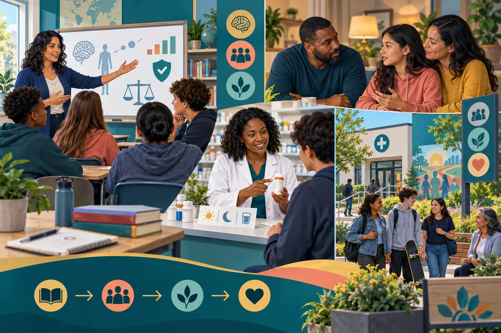

Section 13: Prohibition, Regulation, Decriminalization, and Harm
Reduction
Policy determines whether dependence is met primarily through
punishment, an unregulated market, healthcare, or a combination of
regulation and support.
Opening story · what dependence puts up for sale
13.1 Sublime’s “Pawn Shop” and the
Price of Immediate Relief
The pawn-shop image makes dependence visible as an exchange
involving work, music, relationships, and future opportunity.
Bradley Nowell, Sublime’s lead singer and guitarist, died from a
heroin overdose on May 25, 1996, at age 28. Sublime had already built
a regional following, but the band’s greatest national success arrived
after his death.
Stories about Nowell describe band equipment being pawned during his
addiction and friends struggling to buy it back. “Pawn Shop” does not
narrate that history as a verified documentary; it uses the pawn shop
as a larger image of exchange, need, value, and desperation. Its
reminder that what is traded can be flesh and bone shifts
attention from objects to the people whose lives surround them.
Immediate exchange
A valuable object becomes quick cash. Under dependence, tomorrow’s
work, security, and relationships can be discounted for relief
now.
→
Human collateral
Bandmates, relatives, employers, and communities may repeatedly
pay to restore equipment, housing, trust, healthcare, or life
itself.
The sociological point is not that a pawn shop causes
addiction.
It is that markets convert distress into transactions. Treatment and
regulated healthcare can reduce the desperation that makes people sell
the tools of their own future.
13.2 The Five Enforcement Levels
of Prohibition
Prohibition makes production, distribution, sale, and/or possession
criminal offenses. In Mary Klein’s five-level description, enforcement
narrows from international production to local street transactions.
Select a tier to see who acts, what happens, and the tradeoff.
🌾
Level 1 · International and national
Source reduction
Who: national governments, foreign governments,
development agencies, and law enforcement.
Action: crop eradication, precursor controls,
alternative-development programs, and efforts to reduce
production.
Tradeoff: production may fall in one location yet
move elsewhere—the “balloon effect.” Alternative livelihoods work
only when farmers have durable ways to earn income.
Supply-side response
All five levels try to make drugs scarcer or riskier to produce
and sell.
Demand-side response
Education, treatment, housing, and opportunity reduce why people
begin or continue risky use.
13.3 Legalization, Regulation, and
Decriminalization
⚖️
Legalization
Removes criminal and civil prohibitions from specified conduct. It
answers:
Is producing, possessing, or supplying this drug
lawful?
📋
Regulation
Sets the conditions for lawful access—who may produce, prescribe,
sell, purchase, test, advertise, tax, and monitor it. Law still
creates and enforces these rules; medicine may control clinical
access.
↔️
Decriminalization
Removes or reduces criminal penalties for specified behavior,
usually possession of a small amount. It does not necessarily
create a legal, tested supply.
Key distinction: legalization and regulation are not
opposites. Alcohol is legal and regulated. A drug can be
legal only for medical use, legal for adults under limited
distribution, or broadly legal with few controls.
Three legalization models
Laissez-faire
Few limits and broad commercial availability. It emphasizes
personal liberty but creates the greatest risk of aggressive
marketing, high availability, and profit incentives that conflict
with health.
Lead actors: consumers and private businesses,
with minimal government control.
Limited distribution
Adult access is permitted through rules for age, location, hours,
potency, packaging, advertising, and licensing—similar in
principle to alcohol, nicotine, and state cannabis systems.
Lead actors: licensing agencies, public health,
regulated businesses, tax authorities, and law enforcement focused
on rule violations.
Medical model
Access is limited to a health purpose or stabilization of
dependence. Screening, dose, pharmacy or clinic distribution,
monitoring, and follow-up can be matched to the drug’s risk.
Lead actors: patients, prescribers, pharmacists,
treatment teams, researchers, and medical regulators.
What decriminalization can—and cannot—do
Potential benefits
Fewer arrests, jail stays, and criminal records for possession.
Lower court and public-defense costs.
Less labeling and greater willingness to seek help.
Trafficking and violence can remain criminal offenses.
Important limits
Supply may remain illegal, so quality, potency, and
contamination remain uncertain.
No lawful producer means limited product testing, taxation, or
recall authority.
Fines and civil penalties can still burden people unequally.
Treatment and housing must actually exist; removing penalties
alone does not create care.
Supply-side and demand-side policy
Supply side: change availability
Source reduction, interdiction, network disruption, licensed
production, potency limits, quality testing, pharmacy controls,
age limits, and restrictions on marketing.
Institutions: governments, regulators, law
enforcement, laboratories, medicine, and licensed producers.
Demand side: change need and motivation
Accurate education, mental healthcare, treatment, medication,
housing, employment, recreation, family support, and recovery
services.
Institutions: schools, families, healthcare,
social services, workplaces, and community organizations.
A complete policy uses both. Supply rules without
demand-side support can displace markets without reducing need. Demand
programs without a safer supply can leave people exposed to
contamination, violence, and overdose while they seek help.
13.4 Policy Lab: Compare Costs and
Benefits
No single access rule fits caffeine, alcohol, cannabis, fentanyl, and
every therapeutic drug. Choose a risk profile and change what society
values most.
This is an illustrative reasoning model—not measured national
dollars or a prediction.
Its default scores make assumptions visible. Count harms caused by
both drugs and policy, then test whether the conclusion
changes.
See the five policy options
ProhibitionCriminal law controls supply and possession.
Limited adult marketLicensed sale with age, place, potency, and marketing
rules.
Medical harm-reduction regulationRisk-tiered access, clinical oversight, treatment, and
continuing evaluation.
Laissez-faire legalizationBroad commercial availability with few limits.
13.5 Regulation as a
Harm-Reduction System
Harm reduction is not the claim that every substance should be sold
everywhere. It is a method: compare benefits and harms, select the
least damaging workable rules, measure results, and revise. Access may
range from ordinary retail sale to tightly supervised medical
administration.
🩺Medicine & public health
Screen, prescribe, treat dependence, monitor outcomes, and protect
confidential health information.
🔬Science
Study dose, interactions, benefits, risks, and unequal effects;
update evidence continuously.
🏛️Government
Set age, potency, packaging, quality, place, and marketing rules;
target violence, coercion, and sales to minors.
🎓Education & community
Translate evidence into education, peer support, overdose
prevention, and accessible services.
🏭Licensed producers
Meet testing, labeling, traceability, and recall requirements.
Match access to risk—not to a single moral label
Everyday regulated access
Caffeine-like products: labeling and consumer safety.
Limited adult access
Alcohol, nicotine, and legal cannabis: age, place, potency, taxes,
and marketing controls.
Prescription or pharmacy access
Benefits may justify use, but dose, interactions, and dependence
require monitoring.
Supervised clinical access
Higher-risk or emerging therapies: screened patients, trained
staff, observation, and outcome reporting.
$
Return regulated revenue to the public
Taxes and licensing fees can support treatment, mental healthcare,
research, education, housing, record relief, and workforce
reentry. Rates must be calibrated: taxes so high that legal
products become unaffordable can preserve the illegal market.
Untreated dependence and drug convictions can exclude people from
employment, education, housing, and licenses. Care, stable access,
expunction where appropriate, and reentry support can recover
human capital—the work, caregiving, creativity, and taxes that
punishment or illness would otherwise prevent.
13.6 Ketamine and Psilocybin:
Regulation Can Permit Learning
K
Ketamine and esketamine
Ketamine is FDA-approved as an anesthetic; psychiatric use is
generally off-label. Esketamine nasal spray is FDA-approved for
specified forms of adult depression and is administered under
healthcare supervision through a restricted safety program.
Compounded ketamine products are not FDA-approved for psychiatric
treatment and do not carry the same assurance of safety,
effectiveness, or quality.
Ps
Psilocybin research
Psilocybin remains investigational at the federal level; it is not
an FDA-approved therapy. Clinical studies are testing possible
benefits and risks, and FDA guidance addresses expectancy,
support, safety monitoring, and durable outcomes. State-supervised
services are different from federal approval of a medicine.
The harm-reduction lesson: regulation can create
controlled access without pretending a substance is harmless.
Screening, known dose and purity, trained supervision, adverse-event
reporting, follow-up care, and research make benefits and risks more
visible than an underground market can.
13.7 Three Levels of
Harm-Reduction Intervention
These levels are not three separate populations or a staircase that
everyone must climb. One person may need services from all three at
once, and movement can occur in either direction. The goal is to meet
the person at the point where harm can be reduced now.

Primary harm reduction builds knowledge, protection, and early
support before a crisis.
Level 1 · Before severe harm
Primary: prevent harmful use and risky conditions
Logical example: A middle-school student learns
what a drug is, how dose and mixing change risk, why an unknown
pill may contain fentanyl, and how to obtain help without being
punished. A patient receiving pain medicine gets clear
instructions, secure storage, follow-up screening, and a plan
for tapering or continuing care.
People and institutions
Schools and educators: accurate,
age-appropriate education every year—not a single fear-based
lesson.
Families and peers: model safe behavior,
notice changes, listen, and connect people to help.
Healthcare and pharmacies: screen early,
explain interactions, prescribe carefully, and provide
disposal and naloxone.
Government and business: require testing,
labels, safer packaging, marketing limits, and workplace
support.
Societal benefit: fewer dangerous initiations
and interactions, earlier care, better health literacy, and less
need for expensive crisis response.
Secondary harm reduction prevents today’s risk from becoming
tomorrow’s death, infection, or permanent injury.
Level 2 · Use is occurring
Secondary: interrupt immediate harm and open a door to care
Logical example: A person using fentanyl visits
a syringe-services program. A peer provides naloxone, sterile
supplies, wound care, drug-checking information, and a same-day
connection to medication treatment. Services are available even
if the person is not ready or able to stop using.
People and institutions
Peers and community organizations: build
trust and bring supplies and education to where people are.
EMS, public health, and pharmacies:
distribute naloxone, respond to overdose, test for infection,
and provide vaccination.
Clinicians and counselors: offer low-barrier
medication, mental healthcare, and voluntary treatment.
Law enforcement: prioritize violence and
exploitation while allowing health services and emergency
calls to operate safely.
Societal benefit: fewer deaths and infections,
safer public spaces, lower emergency costs, and more contact
with treatment and social services.
Tertiary harm reduction supports long-term stability, health,
relationships, and social contribution.
Level 3 · Severe or lasting consequences
Tertiary: reduce disability and restore stability
Logical example: A person with a long-term
opioid use disorder receives methadone or buprenorphine,
continuing counseling, wound and primary care, stable housing,
record-relief assistance, and job training. Success is measured
not only by abstinence but also by survival, stability, health,
and participation.
People and institutions
Medical and behavioral healthcare: provide
continuing medication, physical care, trauma treatment, and
periodic reassessment.
Housing and social services: stabilize food,
transportation, identification, benefits, and a safe place to
live.
Courts and government: remove unnecessary
legal barriers, support diversion and record relief, and fund
evidence-based care.
Employers, colleges, families, and recovery
communities:
rebuild roles, income, belonging, and purpose.
Societal benefit: less disability and repeated
crisis, more employment and caregiving, stronger families, and
recovered human capital.
Interactive whole-system plan
What changes when all three levels work together?
Select each level to activate its contribution. The outcome panel
shows why isolated programs help, but coordinated institutions
create a larger benefit.
Knowledge & preventionschools · families · public health
Survival & connectionpeers · EMS · clinics
Stability & participationcare · housing · work
Build the plan
Activate one or more levels to see their combined social
effects.
The policy lab is a transparent classroom model. Its numerical results
are illustrative scores, not estimates of dollars, deaths, prevalence,
or causal effect.